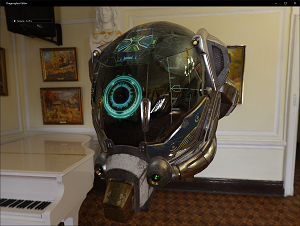
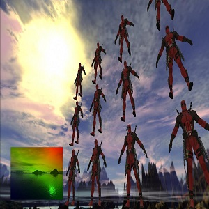
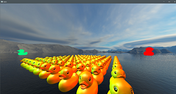
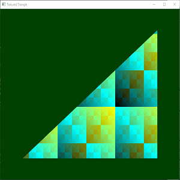
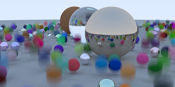
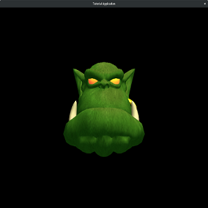

A 3D game engine with multiple graphics backends, written in Rust. This is being developed in conjunction with a horror game that lives in the same repo.
View Project
A small cross-platform 3D game engine, using OpenGL for rendering. This project was my introduction to a variety of modern rendering concepts.
View Project
A gltf scene renderer using OpenGL and written in Rust. The knowledge gained from this project will be used to write an OpenGL backend for DragonGlass.
View Project
A Rust port of the OpenGL superbible, eighth edition. This includes an implementation of a KTX parser and a parser for the superbible-specific 3D model format.
View Project
A brute force ray tracer implementation following the "Raytracer in a Weekend" book. The project also includes a partial implementation of features from the second book in the series.
View Project
An Ogre3D 1.9 and C++ project template that uses CMake to setup an Ogre development environment quickly and easily. I created this so that students in my game engine architecture class could easily get started, as setting up a development environment was tricky.
View ProjectMinor in Mathematics